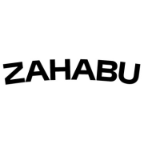

Created in 2026, Zahabu Culture Garden is a new space dedicated to culture, creativity and community in the building.
Emerging from the creative voices at the Mall, Zahabu was designed as a hybrid space where music, food, skate, broadcast and creative practice intersect. The space provides a platform for experimentation, collaboration and cultural exchange.
At its core, Zahabu exists as a community-driven cultural and creative playground where music, atmosphere, and people evolve together. It is a place that prioritizes individual expression as wll as intercultural and intergenerational dialogue through the arts.
The Mall, Rooftop, Westlands, Nairobi
info@zahabu.co.ke